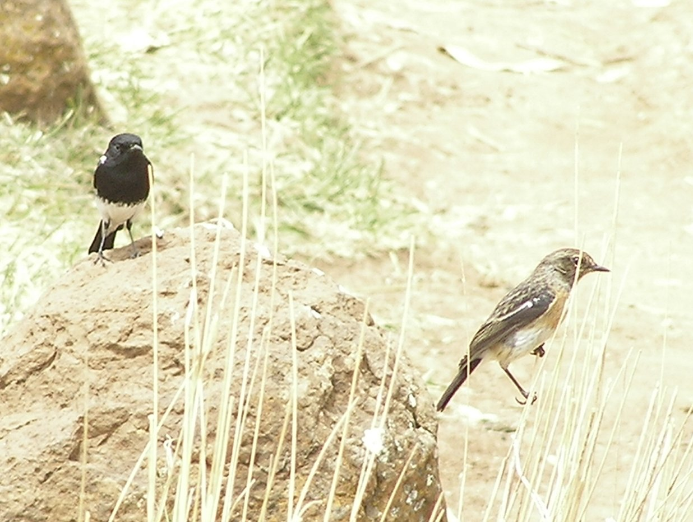
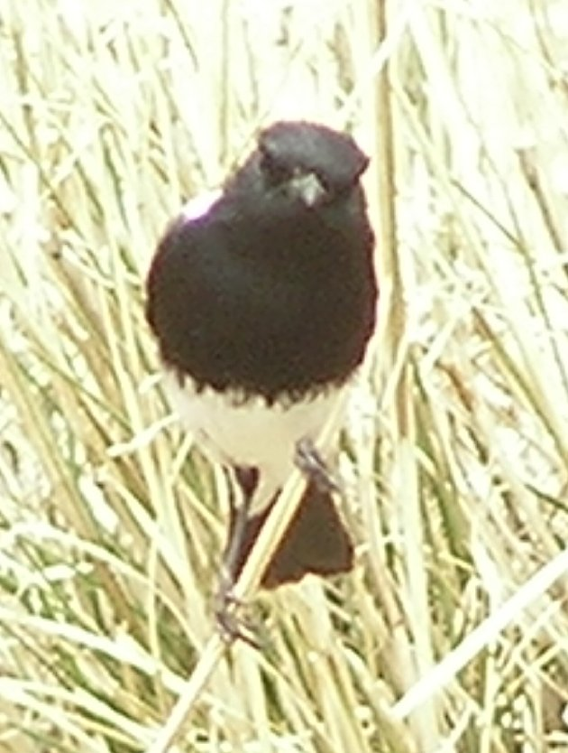
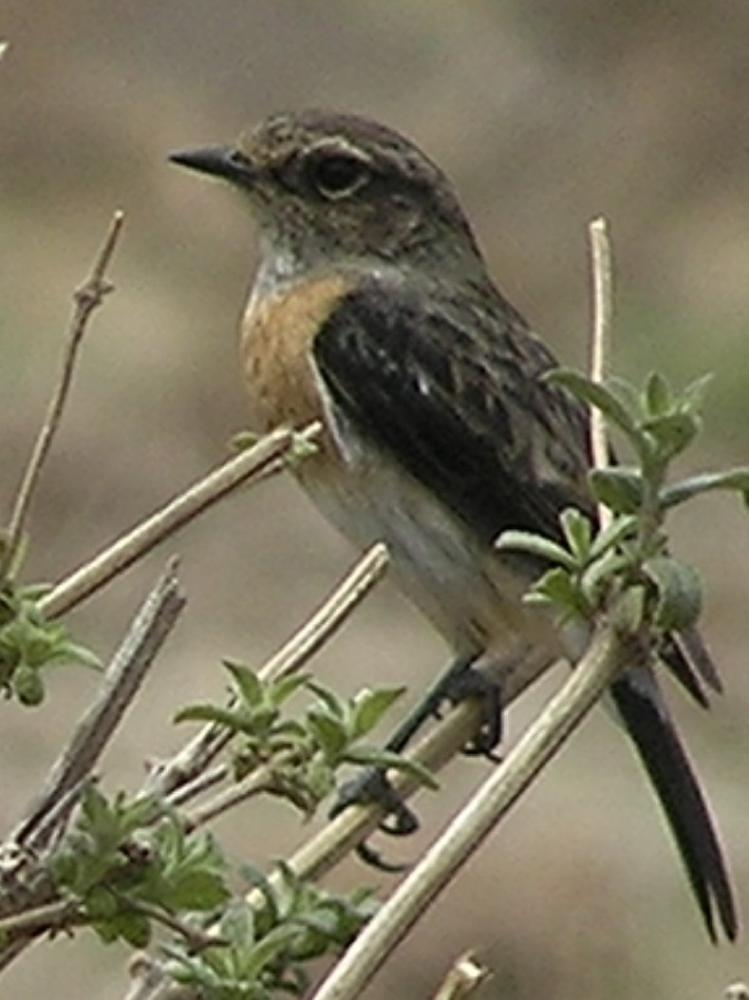
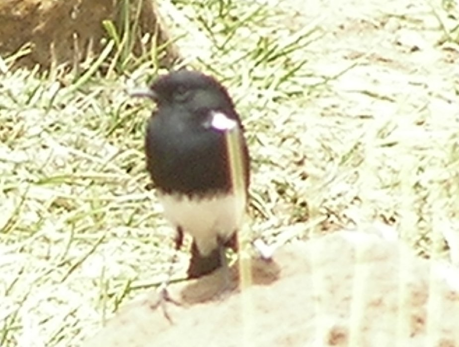

13-14cm.
|  | ||
|  |  |  |
This pair were indulging in pursuit courtship on a farm at an altitude of about 3000m. At least I think it was courtship. The female is similar to a winchat, but perhaps larger. The striking black and white albicensis male is quite unlike other common stonechat males
There is some doubt whether this is a species or a family of Saxilla Torquatus.